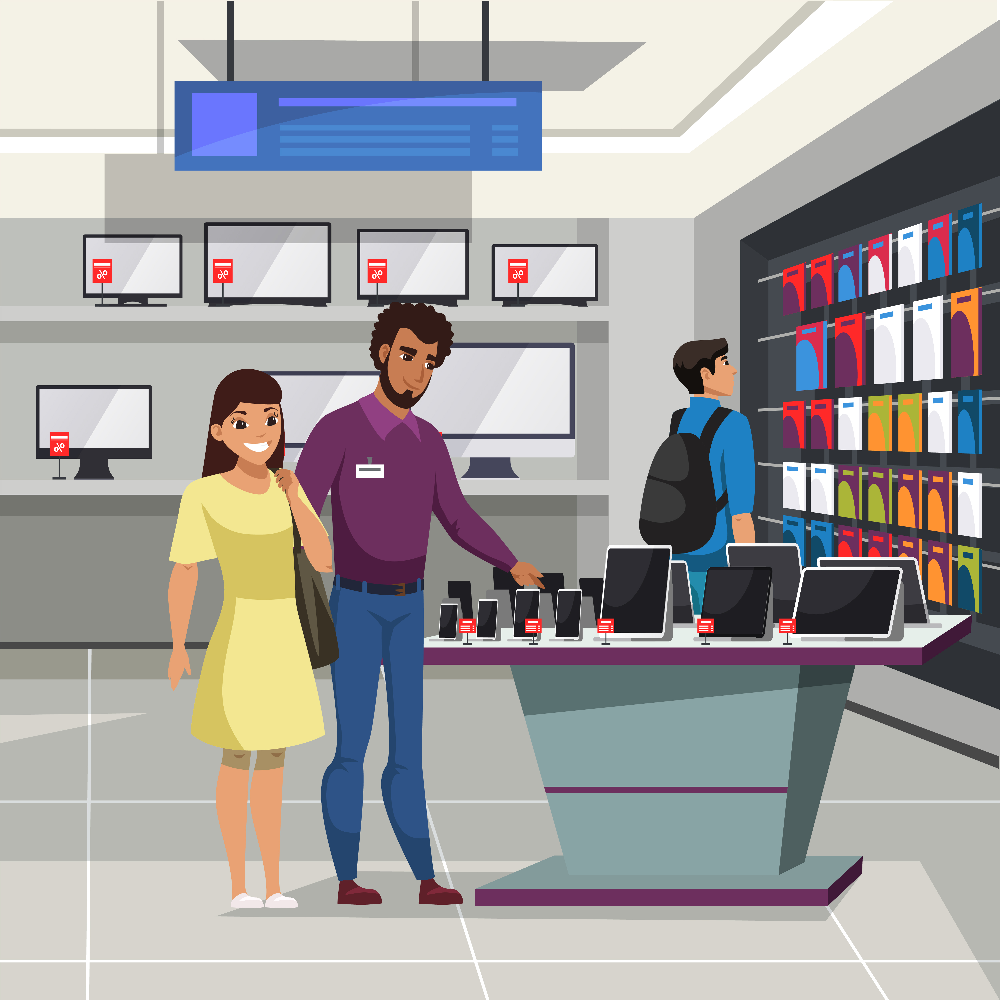

The analysis and visualization project focused on understanding customer demographics, booking patterns, and churn rate at Citi Hotel and Resort Hotel. By collecting and analyzing data, including customer demographics and booking records, key insights were uncovered. Visualizations such as graphs and charts were used to present findings clearly. The analysis revealed that customers from Portugal were dominant, August was the peak arrival month, and churn rate was high initially. Recommendations were made to improve marketing strategies and reduce churn.
Following implementation, the churn rate decreased to 15%, leading to improved customer retention and business performance. The analysis was done using microsoft excel(pivot table)


As a member of Silver Blue Airways, a thorough analysis using Power BI revealed critical areas for improvement: poor service quality, discomfort in economy class, and dissatisfaction with food offerings. To address these concerns, recommendations include enhancing food options, providing additional training to staff for improved service delivery, and expanding flight routes to offer more destinations. These strategic
initiatives aim to elevate customer satisfaction and reinforce Silver Blue Airways' commitment to excellence in air travel.

In response to the dynamic market landscape, Tech Haven engaged my expertise as a business analyst to identify avenues
for e-Commerce improvement and understand customer preferences. Conducting a thorough data analysis,
I established new databases and observed a significant sales trend: certain products were outselling
others due to available discounts. This insight underscored the importance of strategic pricing and
presented an opportunity for Tech Haven to enhance their discounting strategy to drive sales across their product portfolio.
I recommended targeted marketing initiatives to promote a broader range of products,
thus enhancing revenue diversification and competitiveness in the e-Commerce sector.

As a business analyst for a footware retailing shop that sells high-quality shoes for men, women,and children online and offline globally, but worried about the sales performance and not achieving its profit,
I was asked to identify processes and bottlenecks for the organisation.
I used analystical tools to understand customer behavior,marketing strategies used, and sales
trends. By tracking how shoppers move through the store,
I found patterns in what they buy and where they need assistance,stores that made the highest sale, countries where our customers buy the most.
This helped the shop improve its layout, staffing,investment on marketing strategies,products offering and other recommendations
to boost sales and enhance customer satisfaction both online and offline stores .